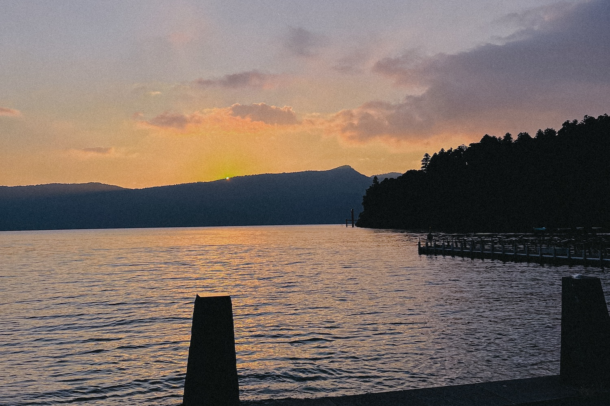
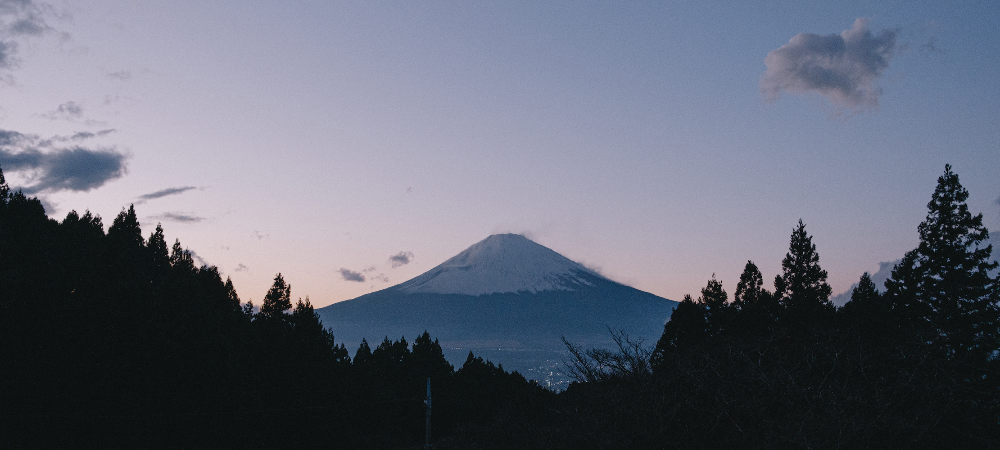

From Far Shores
You know I really, truly did plan to make this a more regular thing but alas, here we are over a year later. The last time I wrote something here (on my former website, if we're being pedantic) I was practically a NEET living in Tokyo; fresh off the boat, no job, no friends. Now I'm back home in the UK, soon to return to Japan on a long-term basis, job and friends all waiting for me; a strange limbo where the prospect of escaping my quiet English midland home town is most of what keeps me going. I'm in my (not quite) childhood home in a spare room up in the attic that was not my childhood room (my younger sister and her tiny dog got first dibs on that), listening to Aphex Twin and surrounded by three half-unpacked suitcases and the relics of my time abroad; kanji practice notepads from MUJI, health insurance payment receipts I accidentally left in my backpack, a pair of Edwin selvedge denim jeans, a cheap roll-neck sweater from GU, and a copy of MUSIC MAGAZINE I somewhat optimistically purchased for reading practice because it had Zazen Boys on the cover.
It's funny, you go away for a year and have this hugely impactful personal experience, and when you come home you quite self-centredly expect everyone else to be just as changed as you are. I've been back in my home town for about a month now, and things are mostly identical to a year ago, perfectly preserved in a kind of metaphorical peat bog. Elsewhere some friends have moved, some have changed jobs, and broken up with long-term partners, but in a lot of ways it feels like waking up back in January 2023. Myself at the beginning of that year, on the other hand, feels impossibly far away from the person typing this now.
During my time in the UK I was a pretty habitual game-player, but in an uncharacteristically minimalist move the only console I decided to take to Japan with me was my Nintendo Switch, thinking I wouldn't have much time for that sort of thing and that I'd be travelling or working every hour, I guess. It ended up being the platform of choice for my play-through of Tunic, a title that originally piqued my interest way back with its announcement trailer. The premise will be familiar to anyone who's played even a small handful of games in the past three decades; explore the world, collect the important items, save the princess (or in this case a similarly female-coded damsel), but that's about where the similarities to The Legend of Zelda stop. The world is filled with an invented foreign language which I believe can actually be deciphered with enough effort; I couldn't help but notice the similarities between my own slow internalising of the (approx.) 2200 jōyō kanji I was quickly realising I'd not been studious enough to learn already. Each day the white noise of characters I'd see on the train was making more and more meaningful sense, and while deciphering Tunic's fictional language is by no means essential to the game's completion, slowly uncovering the puzzle of the world is. And in a sort of childish way, a first-time year abroad in a foreign country can feel like one's own sort of adventure. There's plenty of games out there made by small and big teams with not a lot more of an ethos than "hey, you remember this old game, right?", but without saying too much, this disarmingly cute game has a lot more going on below that'll make you wish every game required you to break it apart in such a way. It's a fantastic game - I even had to bring out the pen and paper at multiple points, the mark of a top-level puzzle game in my book - but this article is not a review of Tunic.
One part of Tunic that has truly embedded itself in my memory, however, is the music. Composed by couple Lifeformed (Terence Lee) and Janice Kwan, Tunic's score is a home run as far as my personal music compatibility goes; subdued downtempo electronic beats, soft solo piano and hazy ambient pads went a long way in accompanying both the game's atmosphere as well as my own travels around Japan. I didn't get into electronic music until my mid-teens (too preoccupied with '80s metal) until a triple-whammy of discovering Aphex Twin, Boards of Canada and the score of the game FEZ (by Disasterpeace, aka Rich Vreeland) all in relatively quick succession. Selected Ambient Works 85-92 didn't have to do much to get me in the door with electronic music, but it wouldn't an exaggeration to say that games music - specifically the smaller independently-made titles - provided even more encouragement, as well as opening me up to the possibility that maybe I could make music on my laptop too. I have a viscerally palpable memory of being sat on my bed one evening back in 2013 with my piece of shit, borderline-overheating Sony VAIO laptop, listening to Disasterpeace's preview track for the game Hyper Light Drifter's Kickstarter page and thinking "I might try this". Special shout out to Rich Vreeland (he's not reading this) - I'm still making music on my computer today.

It's early May, and I'm listening to the wistful piano melody of 'To Far Shores' and upbeat 'Memories of Memories' as I navigate the length of a crystal-blue ravine in Iya Valley, Tokushima Prefecture
A few days earlier I'm wandering through the middle of Kojima's sleepy suburban sprawl, on Okayama's south coast opening out to the Setoichi inland sea. The town is known as the home of artisanal raw denim but I've arrived far too late to do any window shopping, and the jeans strung across the iconic 'Jeans Street' are more akin to a horror film set than a quirky shopping avenue. Stumbling into the only ramen shop open past 5PM, the elderly pair serve me a shio-ramen (lit. 'salt ramen') I'm certain took a few years off my life expectancy, but nonetheless Japanese grannies' cooking is undefeated. Our chat consists of the usual "why do you speak Japanese?", "oh, the UK? Wow... that's so cool", and "but why did you come all the way to Okayama?". The next day I take the slow train down to Uno and board a ferry to the museum-littered island of Naoshima; my games-poisoned brain couldn't stop thinking about Myst. A day spent slow-roasting in the sun and nodding pensively at modern art later, I'm on the pier recounting my trip - short as it's been so far - to my dad back in England, and I remember in this moment the future feeling more open than ever.
Five months of working in Tokyo later, and the warm climes of springtime central Japan are replaced with a bitterly cold day in the more mountainous Hakone Prefecture. I started a new job in August, and this is my first trip outside of Tokyo in months; Japanese summer with all its humidity and absurd temperatures doesn't exactly make you want to get out and travel. For all its faults, a good UK summer hits like nothing else, while much of Japanese summer feels like something to be collectively endured - although there is something of a nostalgic quality to it, maybe that romanticism comes from watching too many slice-of-life anime. I've made my way from Odawara, on a quiet bus-ride through the mountains and down to Lake Ashi, the picturesque torii gate of Hakone Shrine lapped at its feet by the waves, Mount Fuji hidden behind the clouds. The concentration of tourists increases the closer I get to Hakone Shrine, but it's bliss compared to crossing Shibuya Scramble every day. With half an hour to kill before the next bus back to Odawara, I find a seat on the stone steps along the lakeside to sit and take in the scenery. The low evening sun casts a heavy haze of golden light over the surface of the cold lake, the track 'Neon Shore' playing in my headphones. The percussion drops in like a cloud-piercing sunbeam, the cascade of synth pads enveloping the fog-sprinkled lake.
I thought about the time I'd spent in Tokyo earlier that year when I'd first arrived, anxiously stewing away in my sharehouse bedroom or out bewildered in the city; I'd forgotten who that was now, left them behind somewhere along the road. The next day I woke early in my hostel back in Odawara and sleepily trudged back to the train station, passing bars of revellers seemingly still drinking from the previous night, and part of me wondered what would have happened had I tried to join them. I was meeting a friend of a former housemate, a nebulously middle-aged Japanese salaryman who, upon hearing I was heading to Hakone for the weekend, informed me of an old friend of his who organises weekly zazen meditation classes in an old building between Gora and Lake Ashi. I take the Tozan (lit. 'mountain-climbing') Railway back into the Hakone highlands, alighting at an all but deserted spot that no other tourists seemed to have reason to get off at, before another rickety bus ride through the winding mountain roads drops me off at an abandoned roadside station. A wave of sulphur stench hits me, blown down the path from the nearby onsen, and under a tunnel of trees a narrow staircase (precariously slippy from last night's rain) leads me up through a torii gate and to a small hut to the side of a shinto shrine. This zazen man a friendly guy, not exactly befitting of my stereotypical image of Buddhist practitioners; he plays a bamboo flute he carved himself, drives a vintage Mini Cooper, and takes us to a roadside diner for burgers afterwards. All this is to say that by some mundane string of coincidences I found myself barefoot in a cold wooden hut in autumnal Hakone, seated in silence with two elderly gentlemen and wondering if the Josh anxiously stepping onto his Hong Kong-bound flight in March 2023 would've imagined such a thing.
I returned to Hakone a second time during my stay, this time on New Year's Eve. The same ambiguously-aged salaryman housemate had driven us high up into the mountains near Gora, and the day's murky weather has lifted in time for us to watch the year's final sunset behind Mount Fuji, now fully visible in the evening glow. I thought about time again; I had 3 months remaining. 'Secret Legend' is playing in my headphones, and I feel it's probably unecessary to describe the significance of watching the end of 2023 with a clear view of the country's iconic mountain - you can imagine that yourself.
It feels strange for things to go so unceremoniously back to how they were before; I guess a year is both a long time, and not a lot of time at all. For all the "so what is Japan like?" questions people have, it's hard to describe how doing something like that can change you irreversibly; sure the trains are great, yeah the food is amazing, sakura season is lovely, but a lot more happens to someone in 12 months. As the plane lifts from the tarmac at Narita Airport in late March 2024, I'm listening to that same piano melody in Tunic's closing track 'From Far Shores'; same on the surface, but with new context. It only takes a year for home to become so alien, and you'd be surprised how quickly a new place can become so familiar.
----------------------------------------Thanks for reading, folks. I hope to write a bit more regularly when I get back to Tokyo - about other media I've been enjoying, places I've been, or projects I've worked on. If you actually read this all the way to the end and enjoyed it, maybe let me know on Twitter or email at joshleeaudio@gmail.com - I'd appreciate knowing someone did!
If you liked what you heard of Lifeformed & Janice Kwan's soundtrack to Tunic, consider giving these a listen:
Also, if you like the few photos I've included in this post then you may want to give my Instagram a follow. I'm thinking about adding a proper photography page to this website, but perhaps later - maybe let me know if you'd be interested in that?
I'm a little out of practice with this whole longform writing thing, but I hope this at least filled a bit of time in a boring afternoon for someone. Other than checking my social media or refreshing my blog's page every now and then I'm not sure how else to keep people up-to-date with these kinds of things... maybe a newsletter? I'm not sure. Anyway, this postscript is getting a little long, so hopefully you'll stop by again. Cheers!